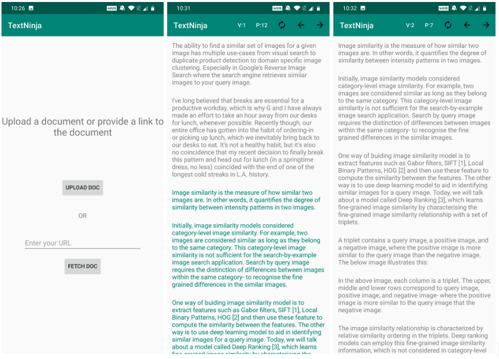

Text Ninja
- An Android application to efficiently read articles/books by highlighting paragraphs of interest and filtering out nonsimilar paragraphs.
- Highlighted paragraphs in a document are passed to the backend flask server to find similar paragraphs across the entire document using cosine similarity & TF-IDF.
Technologies Used: Android, Java, AWS, Flask, NLTK
Code
